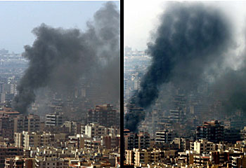

مدرسة ميناب: ما نعرفه وما لا نعرفه

نتحدث عن مدرسة للبنات في مدينة ميناب جنوب إيران، على بُعد 22 كم من مضيق هرمز. تدور حولها الآن واحدة من أبرز المعارك الإعلامية في هذه الحرب، وموجة هستيريا جماعية على الإنترنت.
تنويه: مقتل الأطفال أمر مأساوي دائمًا. الأطفال بالتأكيد ليسوا مذنبين في شيء — لا في إيران، ولا في روسيا، ولا في إسرائيل. لكنهم أيضًا ليسوا مذنبين في أن النظام الإيراني عمل على مدى عقدين من الزمن على تطوير أسلحة نووية، معلنًا صراحةً عزمه تدمير «الكيان الصهيوني». إسرائيل بلد صغير. بلد انفجار نووي واحد.

ماذا حدث ومن نفّذ الضربة
نُفّذت الضربة في 28 فبراير، خلال النصف ساعة الأولى من بدء العملية. الهدف الرسمي — مجمع سيد الشهداء العسكري، مقر لواء آصف الصاروخي التابع للقوات البحرية في الحرس الثوري الإسلامي — أحد أبرز الوحدات الهجومية في الحرس الثوري الإسلامي التي تسيطر على مضيق هرمز.
وفقًا لتحقيق رويترز المنشور في 6 مارس، يميل المحققون العسكريون الأمريكيون إلى الاستنتاج بأن الضربة نفّذتها على الأرجح القوات الأمريكية — على هدف عسكري تابع للحرس الثوري الإسلامي. لم تعترف الولايات المتحدة ولا إسرائيل رسميًا بالمسؤولية.
وزير الدفاع هيغسيث:
«We're investigating that. We, of course, never target civilian targets»
وزير الخارجية روبيو:
«The Department of War would be investigating if that was our strike»
المتحدثة باسم البيت الأبيض كارولين ليفيت:
«The Iranian regime targets civilians and children — not the United States of America»
صرّح متحدث باسم الجيش الإسرائيلي بأن إسرائيل لا علم لها بأي ضربة إسرائيلية في منطقة ميناب.
وفقًا للمصادر، قسّمت الولايات المتحدة وإسرائيل مناطق المسؤولية: عملت إسرائيل على الأهداف الصاروخية في غرب إيران، بينما عملت الولايات المتحدة على الأهداف البحرية والصاروخية في الجنوب. (Reuters / Times of Israel)
تزعم السلطات الإيرانية سقوط 165–180 قتيلًا، معظمهم فتيات بين 7 و12 عامًا. لا يوجد تأكيد مستقل للأرقام الدقيقة. (CBS News، NBC News)
إيران والشفافية: الوصول صفر
الخبر الكاذب رقم 1: «حاملة الطائرات تحترق». زعم الحرس الثوري الإسلامي أنه أصاب حاملة الطائرات USS Abraham Lincoln بصواريخ باليستية. ظهر فورًا مقطعا فيديو على وسائل التواصل الاجتماعي: مقطع مُولَّد بالذكاء الاصطناعي لحاملة طائرات مشتعلة (بعلامات خاطئة على سطح الطيران وتفاصيل غير واقعية) ومقطع من لعبة الفيديو Arma 3 أُعيد نشره بتعليقات جديدة. حصدت المقاطع ملايين المشاهدات — بما في ذلك أكثر من 10 ملايين في وسائل التواصل الصينية. ردّت القيادة المركزية الأمريكية (CENTCOM) مباشرة:
«Iran's IRGC claims to have struck USS Abraham Lincoln with ballistic missiles. LIE. The Lincoln was not hit. The missiles launched didn't even come close»

السؤال الجوهري الذي لا يكاد يطرحه أحد: لماذا يجب أن نصدّق الأرقام الإيرانية دون تحقق؟
لم تسمح الجمهورية الإسلامية الإيرانية بإجراء تحقيق مستقل في أي حادثة ضحايا مدنيين على مدار تاريخها بالكامل:
- الرحلة PS752 — جرافات في موقع التحطم قبل وصول المحققين، الصناديق السوداء احتُجزت لمدة عام ونصف
- احتجاجات «المرأة، الحياة، الحرية» (2022) — لم يُسمح لأي مراقب مستقل بالدخول، وصودرت جثث القتلى من عائلاتهم
- احتجاجات نوفمبر 2019 — قُطع الإنترنت لمدة أسبوع في جميع أنحاء البلاد، وتم تحديد عدد القتلى فقط من خلال التسريبات (رويترز: نحو 1500)
- الإعدامات الجماعية عام 1988 — أنكرت إيران الواقعة ذاتها لعقود؛ حُدد عدد الضحايا (حتى 5000 سجين سياسي) من شهادات الناجين وتسجيل صوتي لآية الله منتظري
الخوارزمية واحدة دائمًا: الإنكار ← اتهام عدو خارجي ← منع الوصول إلى الموقع ← الاعتراف فقط تحت ضغط أدلة دامغة. الرحلة PS752 — مثال نموذجي: ثلاثة أيام من الكذب، جرافات على الحطام، اعتراف فقط بعد نشر فيديو إطلاق الصاروخ.
في حالة ميناب — لم تُتَّخذ أي من هذه الخطوات. لا محققين مستقلين. لا مراقبين دوليين. لم تنشر أي منظمة مستقلة صور أقمار اصطناعية للمدرسة. لم تُذكر أسماء الضحايا. المصدر الوحيد للأرقام — التلفزيون الرسمي للجمهورية الإسلامية.
أين تقع المدرسة — وما طبيعتها

لنبدأ بتفصيلة فضّلت معظم وسائل الإعلام تجاهلها. الاسم الرسمي الكامل للمنشأة هو «Shajareh Tayyebeh IRGC Navy Girls' School» — مدرسة البنات التابعة للقوات البحرية في الحرس الثوري الإسلامي. ليست «مدرسة بالقرب من قاعدة عسكرية». إنها مدرسة مملوكة للحرس الثوري الإسلامي. وفقًا لوسائل الإعلام الإيرانية المعارضة للنظام — مدرسة لأبناء العسكريين، بُنيت مباشرة ضمن القاعدة.
أثبت تحليل تحديد الموقع الجغرافي الذي أجراه باحثون مستقلون أن المدرسة كانت ضمن نفس المحيط المسوّر لمجمع سيد الشهداء — مقر لواء آصف. وفقًا لصور الأقمار الاصطناعية، كان المبنى حتى عام 2016 داخل القاعدة العسكرية مباشرة؛ وفي سبتمبر 2016 فُصل بسياج إضافي. (Wikipedia، تحديد الموقع / Ashkan Khatibi)
المدرسة نفسها ملاصقة لمحيط القاعدة — حتى عام 2016 كانت فعليًا داخل هذا المحيط، ثم فُصلت بجدار. المسافة البالغة 600 متر (التي يتحدث عنها الجميع الآن قائلين إنها بعيدة) هي المسافة من المدرسة إلى مقر لواء آصف (سيد الشهداء)، أي إلى هدف عسكري محدد داخل القاعدة. القاعدة ذاتها يبلغ طولها نحو 500–700 متر، وهي مجمع كبير يضم 8–10 مبانٍ أو أكثر (مقر قيادة، عيادة، صيدلية، مجمع ثقافي، إلخ). المدرسة هي في الواقع جزء من مجمع الأهداف العسكرية.

أكدت كل من CNN وNew York Times أيضًا: كان المبنى منشأة عسكرية سابقة حُوّلت إلى مدرسة، وكان تاريخيًا جزءًا من قاعدة الحرس الثوري الإسلامي.
الصورة على Google Maps معبّرة: المنطقة المحيطة عبارة عن نسيج سكني كثيف. المدرسة تقع في زاوية قطعة أرض مستطيلة واسعة ذات مساحات مفتوحة كبيرة — وهي سمة مميزة لأراضي القواعد العسكرية. ويتضح أيضًا أن المدرسة منفصلة عن المنطقة السكنية وملاصقة للقاعدة العسكرية.

وفقًا للقواعد الصارمة في الإسلام، لا ينبغي للفتيات الاختلاط برجال أجانب. ولهذا السبب بالذات المدرسة مخصصة للبنات فقط، ولا يوجد فيها أولاد. وضع مدرسة للبنات ملاصقة لقاعدة عسكرية يتواجد فيها مئات العسكريين — بمعايير الإسلام ذاته — فكرة غير تقليدية بالمرة. لكن الحرس الثوري الإسلامي لا يخضع لأحد، فعلى ما يبدو لا بأس بذلك.
مرة أخرى: حتى عام 2016 كانت المدرسة حرفيًا داخل محيط قاعدة الحرس الثوري الإسلامي — سياج واحد، مجمع واحد. في عام 2016 فُصلت بجدار، لكن المبنى بقي ملاصقًا للأهداف العسكرية. CBC كتبت صراحة: المدرسة «was once part of» قاعدة الحرس الثوري الإسلامي. أي أنها شكليًا لحظة الضربة لم تعد «ضمن أراضي» القاعدة — لكنها تاريخيًا كانت جزءًا منها، وتقع على بُعد 600 متر من مقر لواء صاروخي.
سياق قانوني مهم: بموجب المادة 52 من البروتوكول الإضافي الأول لاتفاقيات جنيف، تفقد الأعيان المدنية المستخدمة لأغراض عسكرية حمايتها. وبموجب المادة 58 — يُلزَم طرف النزاع بتجنب إقامة أهداف عسكرية بالقرب من السكان المدنيين. مدرسة مملوكة للحرس الثوري الإسلامي وموجودة ملاصقة لمقر لواء صاروخي — هذه بالضبط تلك الحالة. المسؤولية عن وضع الأطفال في منطقة الاستهداف تقع أولًا وقبل كل شيء على من وضعهم هناك.
الحرس الثوري الإسلامي في المدارس: ممارسة موثقة
استخدام البنية التحتية المدنية من قبل الأجهزة الأمنية الإيرانية — ليس فرضية. إنها ممارسة منهجية موثقة تعمل منذ ثمانينيات القرن العشرين.
الباسيج — الجناح الميليشياوي للحرس الثوري الإسلامي — يدير شبكة تنظيمية تضم ما بين 40,000 و54,000 قاعدة (پایگاه)، يقع جزء كبير منها مباشرة في مباني المدارس في جميع أنحاء إيران. هذا ليس ارتجالًا في زمن الحرب. إنها بنية رسمية بُنيت على مدى عقود. برامج تجنيد الأطفال — «أوميدان» (الأولاد)، «پوياندگان» (البنات)، «پيشگامان» (المراهقون) — تعمل داخل المدارس، وتُشرك الطلاب في التلقين الأيديولوجي والتدريب شبه العسكري منذ سن مبكرة. المدرسة والبنية التحتية العسكرية للحرس الثوري الإسلامي — ليسا عالمَين منفصلين. إنهما مندمجان هيكليًا.
يناير 2026 — قبل شهر من بدء الحرب. نشر مواطنون إيرانيون تحذيرات على وسائل التواصل الاجتماعي: لا ترسلوا أطفالكم إلى المدارس — النظام يحوّلها إلى قواعد للباسيج. (RightWingHeadlines)
نقابة المعلمين الإيرانية حذّرت رسميًا من التواجد المتزايد للأجهزة الأمنية في المدارس: عناصر الباسيج، مبعوثون دينيون، أفراد بملابس مدنية — كانوا يدخلون مباني المدارس في جميع أنحاء البلاد تحت ذرائع مختلفة. (IranWire)
خلال العمليات القتالية رُصدت تسجيلات فيديو: وحدات الحرس الثوري الإسلامي والباسيج تعمل من مباني مدارس في طهران وشيراز.
في 3 مارس وثّقت IranIntl واقعة أخرى كاشفة: أقامت إيران مؤتمرًا صحفيًا رسميًا داخل مبنى المدرسة — استخدام استعراضي لموقع مدني لأغراض إعلامية. (IranIntl)
إيران ليست فريدة هنا — بل صدّرت هذا التكتيك. تبنّت حماس في غزة العقيدة ذاتها: ففي عام 2014 اكتشفت وكالة الأمم المتحدة لإغاثة وتشغيل اللاجئين الفلسطينيين (الأونروا / UNRWA) صواريخ مخبأة في مدارسها ثلاث مرات. ثلاث حوادث منفصلة خلال عملية واحدة. أدانت الأونروا رسميًا استخدام منشآتها وطالبت بتفسيرات. وعملت «حزب الله» في لبنان وفق النموذج ذاته، بنشر منصات إطلاق في أحياء سكنية ومؤسسات تعليمية. كل هذا — مدرسة واحدة، بالمعنى الحرفي: مدرسة الحرس الثوري الإسلامي المُصدَّرة إلى تلاميذه. (Times of Israel)
هذه ليست تفصيلة عرضية. بموجب القانون الإنساني الدولي، تفقد المدارس والمستشفيات حمايتها فور استخدامها لأغراض عسكرية. النظام يعلم ذلك — ولهذا بالتحديد يتعمّد وضع البنية التحتية العسكرية في المنشآت المدنية: ليرى العالم عند الضربة مدرسة، لا قاعدة صاروخية.
والآن — السياق الذي وقع فيه كل هذا. انتهت المفاوضات في 26 فبراير في جنيف. الوفد الإيراني في الاجتماع الأول أعلن بفخر: تم تخزين يورانيوم مخصّب يكفي لصنع 11 قنبلة، ولم تستطع أي عمليات تفتيش للوكالة الدولية للطاقة الذرية منع ذلك. في الاجتماع الأخير عرض الأمريكيون حلًا وسطًا — وقف اختياري للبرنامج النووي لمدة 10 سنوات، دون تفكيك، فقط تحت رقابة الوكالة الدولية للطاقة الذرية. رفضت إيران. بعد يومين بدأت الغارات — بوجود مجموعتي حاملات طائرات في المنطقة. في ظل هذه الظروف، إجراء دروس في مدرسة ملاصقة لمقر لواء صاروخي تابع للحرس الثوري الإسلامي — هذا إما إهمال جنائي، أو قرار متعمَّد.
ما حدث في الموقع

توجد صور للمبنى المدمر، جزء منها تم التحقق منه بمصادر مستقلة. المبنى صغير ومدمر. حوله أرض مفتوحة وكثير من الطوب المكسور.

لنتمعن فيما يجري حول الموقع. عدد كبير من الأشخاص — رجال حصرًا تقريبًا، دون تجهيزات مهنية. معدات بناء ثقيلة تعمل بالفعل: جرافة، حفارة، رافعات. التصوير تم بوضوح ليس في الدقائق الأولى بعد الضربة.

في الوقت نفسه، في التسجيلات المبكرة: لا توجد سيارة إسعاف واحدة، لا طبيب واحد، لا مشهد واحد لتقديم رعاية طبية. نقطة تقنية مهمة: إذا كان هناك أحياء تحت الأنقاض، لا يتم حفرهم بالحفارة. عمليات الإنقاذ تُجرى باليد، بحذر، وبمعدات متخصصة.
لاحظت صحيفة لوموند الفرنسية ذلك صراحة: «رغم العدد الكبير من الضحايا، لا تزال تسجيلات الفيديو التي تظهرهم قليلة». أجريتُ بحثًا بمساعدة Claude وPerplexity، ولم أتمكن من العثور على صورة واحدة لإخلاء طبي أو تقديم إسعافات أولية. تم فحص نحو 60 صورة من Wikimedia Commons (18 ملفًا — أنقاض، ركام، منقذون يعملون بأيديهم، جثث)، Getty Images (42 صورة — أنقاض، جنازات، جثث)، Wikipedia، Al Jazeera، Reuters — لا شيء. الإشارة النصية الوحيدة لسيارات الإسعاف — في Wikipedia نقلًا عن NYT: «injured victims taken away in ambulances»، لكن لا توجد صورة واحدة تؤكد ذلك في المصادر المفتوحة. CNN وThe Guardian نشرتا كمواد موثقة — فقط الحشود والمبنى المدمر. (HonestReporting)
الجنازات. في 3 مارس — بعد ثلاثة أيام من الضربة — بث التلفزيون الرسمي الإيراني جنازات جماعية بنعوش أطفال مغطاة بأعلام الجمهورية الإسلامية. مئات المعزّين في الشوارع، وحفارات تُعدّ أكثر من 100 قبر. من المهم فهم أن: جميع اللقطات، جميع الأرقام، جميع الأسماء — تصدر حصريًا عن الدعاية الرسمية الإيرانية. التصوير الجوي للقبور — إيراني؛ من المدفون فيها — لم يُتحقق منه مستقلًا. بالإضافة إلى ذلك، بعد الجنازات انتشرت موجة من الصور المولّدة بالذكاء الاصطناعي المزيفة «للمعزّين» و«نعوش الأطفال» على وسائل التواصل الاجتماعي — المزيد عن ذلك أدناه.
نشرت BBC لقطات من الجنازات، لكنها نوّهت صراحة: «BBC News has not been able to independently verify the Iranian authorities' death toll». نشرت وسائل الإعلام الإيرانية قائمة مكتوبة بخط اليد تضم 56 اسمًا مع تواريخ الميلاد — تمكنت BBC Verify من التحقق من ثلاثة منها فقط عبر النقوش على النعوش في التسجيلات المصورة. أعلنت السلطات القضائية في هرمزگان تحديد هوية 140 جثة — لكن هذه بيانات مسؤولين إيرانيين، لم تُؤكَّد مستقلًا.
سؤال منفصل — من الذي لقي حتفه بالضبط. أفادت The Telegraph عن 165 ضحية، من بينهم 81 فقط طالبات. من هم الـ84 بالغًا المتبقون؟ في مدرسة واقعة ضمن مجمع الحرس الثوري الإسلامي — من المحتمل أن بعض الضحايا كانوا عسكريين أو موظفين تابعين. إيران لا توضح ذلك. علمًا بأن The Telegraph أيضًا تعتمد حصريًا على مصادر إيرانية — لا يوجد غيرها ببساطة. (HonestReporting)
لم يُسمح لأي صحفي أجنبي بدخول الموقع. جميع التحقيقات الغربية (NYT، BBC، CBC، NPR) بُنيت على التحقق من مقاطع فيديو إيرانية وصور أقمار اصطناعية من Planet Labs بتاريخ 4 مارس — بعد أربعة أيام من الضربة. لم تُجرِ أي منظمة دولية — الأمم المتحدة، الصليب الأحمر الدولي، منظمة الصحة العالمية — تحقيقها الخاص، واكتفت بالإدانات والنداءات. عدد القتلى في التصريحات الإيرانية استمر في الارتفاع: أولًا «أكثر من 40»، ثم 153، ثم «أكثر من 160» — مع مستوى منخفض باستمرار من التحقق المستقل.
كيف عملت الدعاية
بث التلفزيون الرسمي الإيراني بيانًا عن مقتل أطفال. نشرت Al Jazeera فورًا مادة تُحمّل إسرائيل المسؤولية. التقطت وسائل الإعلام الغربية الخبر — دون طرح سؤال واحد عن المصدر. دورة «الاتهام ← الانتشار الفيروسي ← التحقق المتأخر» عملت بشكل نموذجي. (HonestReporting، Algemeiner)
السفارة الإيرانية في النمسا نشرت على منصة X صورة لحقيبة مدرسية ملطخة بالدماء — «حقيبة إحدى الفتيات القتيلات». حصد المنشور 965 ألف مشاهدة، 8 آلاف إعادة نشر، 20 ألف إعجاب.

انتشرت الصورة فورًا. نشرت Al Jazeera English مادة تُحمّل إسرائيل المسؤولية — 80 ألف مشاهدة. التقطت وسائل الإعلام الغربية الخبر: نقلت The Telegraph أرقام الضحايا عن مصادر إيرانية.
فحص الباحثون صورة الحقيبة عبر كاشف SynthID. النتيجة: تم اكتشاف علامة مائية مخفية لـ Google Gemini في البيانات الوصفية. الصورة مولّدة بالذكاء الاصطناعي. سفارة رسمية لدولة ذات سيادة كانت تنشر خبرًا مزيفًا مولّدًا بالذكاء الاصطناعي كدليل. (Tal Hagin / كشف التزييف، HonestReporting)

نشر عضو البرلمان البريطاني كريس هازارد (شين فين) على منصة X صورة أخرى مولّدة بالذكاء الاصطناعي «لجنازات جماعية» مع تعليق «This image should be the front page of every news outlet» — 242 ألف مشاهدة، 7 آلاف إعادة نشر. قيّم كاشف Hive Moderation الصورة على أنها مولّدة بالذكاء الاصطناعي بنسبة 100%. (BOOM)


سؤال يستحق الطرح: لماذا يفبرك النظام أدلة على مأساة إذا كانت المأساة حقيقية؟ الصور الحقيقية لـ168 طفلًا قتيلًا لا تحتاج إلى معالجة عبر Google Gemini. التزييف لا يعزز الحقيقة — بل يُشير إلى أن الصورة الحقيقية لا تتطابق مع المُعلَن.
تلفيق الضحايا: ليست المرة الأولى
ميناب ليست الحالة الأولى التي تتبين فيها أن أعداد الضحايا المُعلنة مبالغ فيها عدة مرات عند التحقق. هناك نمط موثق.
مستشفى الأهلي، غزة، أكتوبر 2023
أعلنت حماس فورًا: قنبلة جوية إسرائيلية دمرت المستشفى، 471 قتيلًا. وسائل الإعلام العالمية — بما فيها New York Times — وضعت الرقم في العناوين. التحقيق اللاحق (الاستخبارات الأمريكية، الاستخبارات الفرنسية، محللون مستقلون) أثبت: الضربة جاءت من صاروخ سقط تابع لـ«الجهاد الإسلامي»، وليس قنبلة إسرائيلية؛ مبنى المستشفى لم يُدمَّر — تضرر موقف السيارات؛ العدد الحقيقي للقتلى — بين 100 و200 شخص، وليس 471. لم تعترف حماس ولا إيران بالمسؤولية ولم تُصحَّح الأرقام أبدًا. (Wikipedia، BBC Verify)

جنين، أبريل 2002
أعلنت مصادر فلسطينية ووسائل إعلام عربية عن «مذبحة جماعية» — ما يصل إلى 500 قتيل من المدنيين. استُخدم مصطلح «إبادة جماعية» على نطاق واسع. لجنة الأمم المتحدة التي حققت في الحادثة أثبتت: قُتل 52 فلسطينيًا، معظمهم مسلحون. خسرت إسرائيل 23 جنديًا — تحديدًا لأنها خاضت القتال بالمشاة في البيئة الحضرية بدلًا من الغارات الجوية، سعيًا لتقليل الخسائر بين المدنيين. (Wikipedia، Human Rights Watch)

الرحلة PS752، يناير 2020
أسقط الحرس الثوري الإسلامي طائرة ركاب أوكرانية — 176 قتيلًا. النظام الإيراني نفى بشكل قاطع أي تورط لمدة ثلاثة أيام، ملقيًا اللوم على «خلل تقني». بدأت الجرافات بتنظيف موقع التحطم قبل وصول المحققين الدوليين. جاء الاعتراف فقط بعد أن نشرت كندا وأوكرانيا وBellingcat أدلة دامغة — تسجيلات فيديو لإطلاق الصاروخ وشظايا رأس حربي لمنظومة «تور-إم1» المضادة للطائرات. (Wikipedia، Bellingcat)

محمد الدرة، سبتمبر 2000
أشهر لقطة في الانتفاضة الثانية: صبي عمره 12 عامًا، يُزعم أن جنودًا إسرائيليين قتلوه أمام كاميرا France 2. أصبحت اللقطة أيقونة — طوابع بريدية، رسوم جدارية، دعوات للجهاد. المشكلة أن الثواني الأخيرة من التسجيل، حيث يرفع «القتيل» يده عن وجهه، تم حذفها. خلص التحقيق الحكومي الإسرائيلي (تقرير كوبرفاسر، 2013) إلى: «ليس فقط أن محمدًا لم يُصَب بنيران الجيش الإسرائيلي — من الممكن أنه لم يُقتل أصلًا». أظهر التحليل البالستي أن الموقع الإسرائيلي كان بزاوية يستحيل معها أن تُحدث الرصاصات الثقوب الموجودة في الجدار خلف الصبي. ادعى المصور تسجيل 27 دقيقة — في المحكمة قُدّمت 18 دقيقة فقط. محكمة الاستئناف الفرنسية في عام 2008 برّأت الصحفي فيليب كارسنتي الذي وصف اللقطات بأنها «خدعة إعلامية»، معتبرةً أن لديه «أسبابًا كافية» لهذا الادعاء. (Wikipedia، The Atlantic)

قانا، لبنان، يوليو 2006
أعلنت مصادر لبنانية: الضربة الإسرائيلية قتلت 54 شخصًا، منهم 37 طفلًا. الصليب الأحمر اللبناني وHuman Rights Watch أثبتا لاحقًا العدد الحقيقي — 28 قتيلًا، 16 طفلًا. أقل من النصف تقريبًا. لكن الأكثر كشفًا كان ما حدث بعد ذلك: رئيس الدفاع المدني في جنوب لبنان سلام داهر — المعروف لاحقًا بـ«الخوذة الخضراء» — صُوِّر مرات عديدة مع جثة الطفل نفسه في أوضاع مختلفة، في أماكن مختلفة، لفرق تصوير مختلفة. توضيح: الطفل قُتل فعلًا — الجثة حقيقية. لكن داهر استخدمها كأداة: يُخرجها، يغيّر وضعيتها، ينقلها، يسمح لفريق تصوير آخر بتصويرها. هذه ليست ضحية مزيفة — إنه تصوير مسرحي بجثة طفل حقيقية لتحقيق أقصى تأثير إعلامي. وهو ربما أسوأ. (Wikipedia، HRW)

عدنان حاج ورويترز، أغسطس 2006
كان المصور المستقل عدنان حاج يزوّد رويترز بصور للقصف الإسرائيلي على بيروت. اكتشف مدوّنون أن أعمدة الدخان في الصور مرسومة بالفوتوشوب بأداة Clone Stamp — تم استنساخها ومضاعفتها للحصول على تأثير درامي. في صورة أخرى، تم استنساخ شعلة حرارية دفاعية واحدة لطائرة F-16 إلى ثلاثة «صواريخ جو-أرض» — تلفيق كامل لهجوم. اعترفت رويترز بالتلاعب، وفصلت حاج وسحبت جميع صوره الـ920 من الأرشيف. لاحقًا فُصل محرر الصور أيضًا. (Wikipedia، Ynetnews/Reuters)

«الصليب الأحمر تحت القصف»، لبنان، يوليو 2006
أفادت AP: «مقاتلات إسرائيلية قصفت بالصواريخ سيارتي إسعاف تابعتين للصليب الأحمر». الصور انتشرت حول العالم. كشف التحليل التفصيلي أن أضرار السيارات لا تتوافق مع ضربة صاروخية — المعدن صدئ (مستحيل من انفجار حديث)، و«ثقب الدخول» في السقف يتطابق تمامًا مع فتحة التهوية المصنعية الموجودة في جميع سيارات هذا الطراز. حتى Human Rights Watch اعترفت لاحقًا بأن الاستنتاج الأولي عن ضربة صاروخية «كان غير صحيح». (Wikipedia، Zombietime — تحليل كامل)

النمط واحد في كل مرة: ادعاء مدوّ ← انتشار فوري ← تحقق متأخر ← الواقع يختلف جذريًا عن الأرقام الأولية. هذه الآلة تعمل منذ عقود. ميناب — آخر منتجاتها.
استنتاجات أولية
الواقع أعقد من مجرد «خبر كاذب». المدرسة كانت موجودة. الأطفال على الأرجح كانوا فيها — الضربة وقعت يوم السبت، أول يوم عمل في إيران، حوالي الساعة 10:45 صباحًا. الضربة استهدفت هدفًا عسكريًا تابعًا للحرس الثوري الإسلامي — مقر لواء آصف الصاروخي التابع للقوات البحرية في الحرس الثوري الإسلامي. المدرسة كانت ملاصقة لمحيط القاعدة، على بُعد 600 متر من المقر.
ما تم إثباته بشكل موثوق:
- الاسم الرسمي الكامل للمدرسة — «Shajareh Tayyebeh IRGC Navy Girls' School». المدرسة مملوكة للحرس الثوري، ووفقًا لوسائل الإعلام الإيرانية المعارضة للنظام — مخصصة لأبناء العسكريين
- حتى عام 2016 كانت المدرسة داخل محيط قاعدة الحرس الثوري الإسلامي؛ ثم فُصلت بجدار لكنها بقيت ملاصقة للأهداف العسكرية
- هدف الضربة — مقر لواء آصف الصاروخي التابع للقوات البحرية في الحرس الثوري الإسلامي، وليس المدرسة. وفقًا لرويترز، يميل المحققون الأمريكيون إلى الاستنتاج بأن الضربة نفذتها القوات الأمريكية
- السفارة الإيرانية في النمسا نشرت صورة مزيفة مولّدة بالذكاء الاصطناعي (الحقيبة) بعلامة Gemini المائية القابلة للكشف — 965 ألف مشاهدة
- الحرس الثوري الإسلامي والباسيج يستخدمان مباني المدارس كقواعد بشكل منهجي — حتى 54,000 قاعدة للباسيج في المدارس في جميع أنحاء إيران، ممارسة مستمرة منذ ثمانينيات القرن العشرين
- وسائل الإعلام كررت تصريحات الدولة الإيرانية دون تحقق — دورة «الاتهام ← الانتشار الفيروسي ← التحقق المتأخر» عملت بشكل نموذجي
- جميع الحالات السابقة (الأهلي، جنين، قانا، الرحلة PS752) أظهرت عند التحقق: الأرقام الأولية مبالغ فيها، والصورة الحقيقية تختلف جذريًا عن المُعلَن
- إيران لم تسمح ولو مرة واحدة في تاريخها بإجراء تحقيق مستقل في حادثة ضحايا مدنيين
ما لا يزال غير مؤكد مستقلًا:
- العدد الدقيق للضحايا (165–180 وفقًا للبيانات الإيرانية) — المصدر الوحيد للأرقام هو التلفزيون الرسمي. أفادت The Telegraph عن 165 ضحية، منهم 81 فقط طالبات. من هم الـ84 المتبقون — غير معروف
- القائمة الكاملة للقتلى — نشرت وسائل الإعلام الإيرانية قائمة مكتوبة بخط اليد تضم 56 اسمًا، تمكنت BBC Verify من التحقق من 3 منها فقط. السلطات القضائية أعلنت تحديد هوية 140 جثة — لكن هذه بيانات مسؤولين إيرانيين
- لم تُجرِ أي منظمة دولية — الأمم المتحدة، الصليب الأحمر الدولي، منظمة الصحة العالمية — تحقيقها الخاص
- لم يُسمح لأي صحفي أجنبي بدخول الموقع
نظام يضع مقرات عسكرية بجوار المدارس، يستخدم المدارس كقواعد ميليشيات لعقود، يبالغ بشكل منهجي في أعداد الضحايا، يمنع التحقيقات المستقلة، ثم يعزز مأساة حقيقية بمُلفَّقات مولّدة بالذكاء الاصطناعي — لا يستحق التعاطف، بل يستحق تحليلًا باردًا وموثقًا.
الحرب المعلوماتية: الأسوأ لم يأت بعد
بالتوازي مع الحرب الساخنة تدور حرب معلوماتية شاملة. والوضع هنا سيزداد سوءًا. لم يُعلّمنا أحد في المدرسة قواعد النظافة المعلوماتية — وهذا يصبح ضرورة حياتية.
لمواجهة ذلك، يجب توظيف ما كان لدى الناس دائمًا وما لا يستطيع أي ذكاء اصطناعي أن يحل محله — سمعة المصدر.
قبل أن تستقبل معلومة، تثق بها، وبالأخص قبل أن تنشرها — انظر من أين جاءت.
الأشخاص الذين يرددون أطروحات الدعاية الكاذبة — ليسوا ضحايا. إنهم شركاء. لا تكونوا شركاء.
خاتمة
استخدموا عقولكم. لا تلتقطوا النفايات المعلوماتية من الأرض — ولا تنشروها بالتأكيد. المعلومات المضلّلة عمدًا لا تصبح حقيقة بكثرة إعادة النشر.
سمعة المصدر — ليست فئة عفا عليها الزمن. إنها الأداة الوحيدة التي تعمل ضد مصنع الأخبار الكاذبة.
المصادر
- 2026 Minab school airstrike — Wikipedia
- Iran holds mass funeral — Al Jazeera
- Photo shows graves of Iranian girls — Snopes
- Image of mourning is fake — Snopes
- «Iran Says School Massacre» and the Media Repeats — HonestReporting
- The Missing Images — HonestReporting
- US probe said to indicate American forces likely launched strike — Reuters / Times of Israel
- AI-Generated Images Falsely Linked to Iran Conflict — BOOM
- Teachers' Union Warns of Security Presence in Iranian Schools — IranWire
- Iran holds press conference at school — IranIntl
- Be Careful About Blaming the US or Israel for Killing Iranian Schoolgirls — AEI
- تحليل تحديد الموقع الجغرافي — Ashkan Khatibi على X
- Iran Military Weaponizes Schools — RightWingHeadlines
- What we know about the strike — CBS News
- Death toll rises — NBC News
- Al-Ahli Arab Hospital explosion — Wikipedia
- Gaza hospital blast: What video, pictures and other evidence tell us — BBC Verify
- Battle of Jenin (2002) — Wikipedia
- Jenin: IDF Military Operations — Human Rights Watch
- Ukraine International Airlines Flight 752 — Wikipedia
- Video Showing Flight PS752 Missile Strike Geolocated — Bellingcat
- Rockets found in UNRWA school, for third time — Times of Israel
- Iran holds funeral for girls killed in school strike — BBC
- Killing of Muhammad al-Durrah — Wikipedia
- Who Shot Mohammed al-Dura? — The Atlantic
- 2006 Qana airstrike — Wikipedia
- Why They Died: Civilian Casualties in Lebanon — HRW
- 2006 Lebanon War photographs controversies — Wikipedia
- Reuters admits altering Beirut photo — Ynetnews
- The Red Cross Ambulance Incident — Zombietime
- Fact Check: Video Does NOT Show US Aircraft Carrier Lincoln Burning — Lead Stories
- USS Abraham Lincoln fire missile Iran — PolitiFact
- CENTCOM: «The Lincoln was not hit» — CENTCOM / X
- Iran girls' school airstrike — BBC Verify
- Iran girls' school airstrike aftermath — Financial Times
- AI-generated backpack debunked (SynthID / Gemini watermark) — Tal Hagin / OSINT
- How a Regime Claim Became a Viral Headline — Algemeiner
- مارك سولونين — عرض فيديو (YouTube)